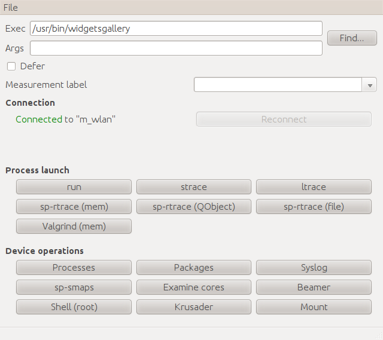
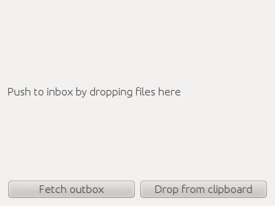
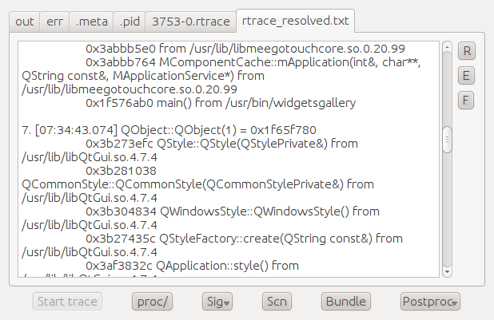

Cardinal Suite provides a selection of tracing / debugging features normally used from command line. The aim is to alleviate the tedium of manually ssh:ing to the device and doing these error-prone steps by hand. It also provides various convenience features like drag-and-drop package installation / file transfer.
Cardinal Suite is mostly targeted at intermediate/advanced users. It does not offer features already supported by Qt Creator (builds, single step debugging).
Ubuntu:
Add Forum Nokia PPA and do:
apt-get install cardinalsuite.
Others:
Acquire the source code and run directly.
Dependencies:
On host: Python 2.x, Paramiko, PyQt4. On device: sshd, python, tools you want to use (strace, ltrace, sp-rtrace, valgrind, gdb...)
Before the suite can be useful, you need to set up ssh networking and automatic authentication on the device. This is accomplished by copying your RSA public keys to the device, following these steps:
or connecting to WLAN. Ensure you can ssh in as “root”.
Edit the file ~/.cardinal.ini and add details (ip address and default user) for the device, and set “defaultdevice” to point at this device. Like this:
[n900_usb]
host = 192.168.2.15
user = user
[main]
defaultdevice = n900_usb
This is the file you need to edit when switching to a different device.
Launch “Beamer”
Drag files (.deb / .rpm) to the Beamer window, accept the prompt about installing them
Enter the app name in the “Exec” field. Click “Find” to search for the application binary (this looks through PATH, .desktop files...)
Many commands allow operation in “deferred” mode. This means that you launch the application normally, but only enable tracing later on when the application is already running (think “strace -p PID”).
To do this, check “Defer” checkbox before choosing the operation. Later, in Process Explorer, press “Start tracing” to start tracing, and the same button to stop tracing later on.
Commands that support Deferred mode include strace, sp-trace, ltrace.
“Process Explorer” is the window that gets opened when you launch an application (with run/strace/...). It can be used to interact with the application (send signal, start / stop tracing) or look at the logs that the application is producing.
Every log emitted by the application is presented by a tab in Process Explorer. Press “R” to fetch the latest version of the currently active log. Press “Scn” to scan for possible new logs from the application (e.g. after postprocessing sp-rtrace output, you can look for rtrace_resolved.txt).
If you were running an operation that requires post-processing to produce useful results (like sp-trace), press “Postproc” and select appropriate postprocessing mode. sp-trace, for example, allows you to filter out memory allocations that were subsequently freed, showing only a list of allocations it considers to be leaks.
